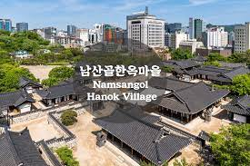

|
CNN이 선정한 세계 11대 음식 박물관 중 하나로,
1986년에 문을 연 우리나라 첫 김치 박물관이다. 단순
히 자료만으로 설명하고 안내하는 일방적 전시가 아닌,
우리 고유의 먹거리 ‘김치’와 유네스코 인류무형문화유
산에 지정된 ‘김장문화’에 대해 시각과 청각의 재미를
더한 참여형 전시 프로그램으로, 좀더 흥미롭게 접근할
수 있다. 어린이, 외국인을 위한 체험 프로그램과 전 연
령 대상의 도슨트 투어가 진행된다.
|
|
2021년 7월에 문을 연 한국 최초의 공립 공예 박물관.
장인들의 솜씨가 꽃피던 조선시대뿐 아니라, 서구의 문
화를 흡수하며 성장한 근대시대, 산업공예가 활성화되
던 일제강점기 등 전통부터 현대까지 아우르는 모든 시
대와 분야의 공예품을 전시한다. 의류, 장신구, 가구 등
우리 생활에 밀접한 전시물이라 멋들어진 우리의 풍모
가 설명 없이도 쉽게 이해돼, 남녀노소 모두 함께하기
좋은 배움터다.
|

|
CNN이 선정한 세계 11대 음식 박물관 중 하나로,
1986년에 문을 연 우리나라 첫 김치 박물관이다. 단순
히 자료만으로 설명하고 안내하는 일방적 전시가 아닌,
우리 고유의 먹거리 ‘김치’와 유네스코 인류무형문화유
산에 지정된 ‘김장문화’에 대해 시각과 청각의 재미를
더한 참여형 전시 프로그램으로, 좀더 흥미롭게 접근할
수 있다. 어린이, 외국인을 위한 체험 프로그램과 전 연
령 대상의 도슨트 투어가 진행된다.
|
|
한국의 전통문화를 소개할 목적으로 만들어진 ‘한국의
집’은 국가무형문화재 대목장 신응수가 경복궁의 자경
전을 본떠 만들었다. 전통혼례, 궁중 수라상 등 다양한
전통 경험을 제공하지만, 가장 가볍게 접할 수 있는 곳
은 ‘고호재’에서의 ‘궁중다과’다. 제철 재료를 활용한 떡,
한과, 전통병과와 전통차로 구성된 1인 궁중다과 상차
림은 계절의 달콤함을 온전히 담아낸다.
|

|
서울시 민속자료 전통한옥 다섯 채를 이전하고 복원해
만든 곳. 선조들의 삶이 담긴 한옥 실내는 전통체험의
터로 가꾸고, 너른 마당과 정원은 전통혼례, 전통놀이
등의 볼거리와 즐길거리의 장으로 펼쳐 놓았다. 날씨와
계절에 상관없이 진행 가능한 실내 체험, 활동적인 실
외 전통놀이 등 다양한 프로그램이 구성되어 있어 남녀
노소 모두를 위한 놀이터가 되어준다
|

|